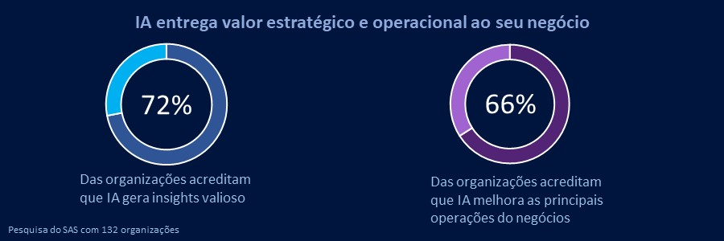

As linguagens de programação utilizadas no Front-End são complementares. Cada uma tem funções específicas, e quando combinadas, são capazes de gerar interfaces completas, funcionais e dinâmicas.
Um ponto importante é que, apesar de algumas das ferramentas abaixo serem conhecidas como linguagens de programação graças à forma como são utilizadas, algumas delas não se enquadram totalmente nessa categoria.
Abaixo, listamos as linguagens mais populares entre os desenvolvedores e explicamos um pouco mais sobre seu funcionamento.
Antes de mais nada, é preciso esclarecer que o HTML (ou Hypertext Markup Language) não é uma linguagem de programação, mas sim, de marcação. Isso significa que ela não segue lógicas ou estruturas de controle, e por isso, não pode criar funcionalidades dinâmicas.
Apesar de não ser suficiente para a criação de um site ou aplicação completa, o HTML pode ser usado junto ao CSS e o Javascript para criar interfaces avançadas.
O CSS não é uma linguagem de programação, mas sim de design gráfico. É usado juntamente com o HTML na composição visual das páginas, ou seja, para cores, margens, formas, tipografia, imagens de fundo, entre outros elementos.
Essa ferramenta possui as próprias regras, que são processadas durante a renderização do navegador. Após fazer a leitura do HTML de uma página, ele analisa o CSS e aplica as regras de estilo em cada um dos elementos.
De acordo com a Stack Overflow Developer Survey de 2020, o Javascript é a linguagem de programação mais utilizada em todo o mundo, e é de suma importância para os desenvolvedores Front-End, pois ela possibilita a criação de interfaces dinâmicas, animadas e interativas.
Trata-se de uma linguagem de alto nível, baseada em objetos e e client-side, ou seja, que roda totalmente no navegador do usuário. Geralmente, é utilizada em conjunto com HTML e CSS para complementar a estrutura e os estilos criados por essas outras ferramentas.
Para os desenvolvedores, é um grande aliado por ser fácil de aprender e não precisar de um compilador, o que o torna compatível com grande parte dos dispositivos.
As melhores faculdades para estudar e se especializar como desenvolvedor front-end
Existem diversas faculdades que oferecem cursos de qualidade na área de desenvolvimento front-end. Algumas das melhores instituições de ensino para estudar e se especializar como desenvolvedor front-end incluem:
Universidade Federal de São Paulo (UNIFESP): A UNIFESP oferece cursos de graduação em Ciência da Computação e Sistemas de Informação, que fornecem uma base sólida para o desenvolvimento front-end. A universidade também possui laboratórios e projetos de pesquisa na área de tecnologia da informação.
Universidade de São Paulo (USP): A USP é uma das principais instituições de ensino do país e oferece cursos de graduação em Ciência da Computação, Engenharia de Computação e Sistemas de Informação. A universidade conta com professores renomados e possui uma infraestrutura moderna.
Pontifícia Universidade Católica do Rio de Janeiro (PUC-Rio): A PUC-Rio é conhecida pela excelência na área de tecnologia da informação e oferece cursos de graduação em Ciência da Computação, Engenharia de Computação e Sistemas de Informação. A universidade possui laboratórios equipados e incentiva a participação dos alunos em projetos de pesquisa.
Universidade Estadual de Campinas (UNICAMP): A UNICAMP é uma das principais universidades do país e oferece cursos de graduação em Ciência da Computação e Sistemas de Informação. A instituição possui um corpo docente qualificado e estimula a prática de projetos na área de desenvolvimento front-end.
Ideal para quem quer aprender sobre DevOps, metodologias e práticas de desenvolvimento de software, conhecimento da agilidade, UML, entre outros temas. Confira mais aqui.
Com 30 horas de duração, o curso traz os princípios básicos para combater um crime cibernético. Acesse aqui.
Neste curso de 6 horas, o aluno irá aprender os fundamentos da lógica, conceitos básicos de programação e estruturas de controle.
O curso ensina a executar análises avançadas e trabalhar com visuais de IA no Power BI.
Ideal para quem quer aprender os fundamentos da programação Java. Aborda variáveis, classes, objetos, loops, arrays e construções de decisão.
Com 60 horas, o curso é dividido em 11 capítulos e, além de fazer uma introdução sobre o tema, também aborda TCP/IP, Engenharia Social, criptografia, entre outros.
A área de Tecnologia da Informação (TI) tem vivenciado um crescimento exponencial ao longo das últimas décadas, impulsionado pela digitalização de empresas, avanços tecnológicos e a demanda por soluções cada vez mais inovadoras. No entanto, essa rápida expansão também levanta preocupações sobre a saturação do mercado de TI. A saturação ocorre quando a oferta de profissionais e serviços no setor supera a demanda, resultando em um ambiente competitivo e desafiador para empresas e indivíduos.
Crescimento Exponencial de Profissionais: A popularização dos cursos e treinamentos em TI atraiu um grande número de pessoas para a área, levando a um aumento na oferta de profissionais qualificados.
Evolução das Tecnologias: À medida que as tecnologias evoluem rapidamente, novas especializações e habilidades surgem. Isso pode levar a uma disseminação ampla de profissionais em várias subáreas, contribuindo para a saturação em segmentos específicos.
Terceirização e Globalização: A possibilidade de terceirizar serviços de TI para outros países aumentou a competição global, ampliando a oferta de profissionais em nível internacional.
Pressão Salarial: Com mais profissionais competindo por oportunidades, os salários podem se estabilizar ou até mesmo diminuir, dificultando a obtenção de remuneração competitiva.
Concorrência Acentuada: Empresas de TI enfrentam uma concorrência intensificada para conquistar clientes e projetos, o que pode resultar em margens de lucro mais apertadas.
Erosão da Qualidade: A busca por oportunidades em um mercado saturado pode levar a comprometimentos na qualidade do trabalho, à medida que profissionais buscam agilidade em detrimento da excelência.
Especialização Profunda: Em vez de se dispersar em várias subáreas, profissionais de TI podem se destacar ao se especializarem profundamente em um nicho específico.
Aprendizado Contínuo: Aqueles que continuam a se atualizar com as últimas tecnologias e tendências terão vantagem competitiva.
Visão de Negócios: Compreender as necessidades e desafios do setor de um cliente e alinhar as soluções de TI a essas demandas é uma estratégia valiosa.
Lembrando que a natureza do mercado de TI é dinâmica, por isso é importante buscar informações atualizadas para obter uma compreensão precisa da situação atual.
A crescente influência da Inteligência Artificial (IA) está transformando o mercado de trabalho em diversas indústrias, e a área de tecnologia não é exceção. A IA está moldando o modo como as tarefas são executadas, as habilidades são valorizadas e até mesmo a estrutura das profissões dentro do setor. Enquanto a IA traz inúmeras oportunidades, também gera preocupações sobre a substituição de empregos e a necessidade de adaptação constante por parte dos profissionais.
Automatização de Tarefas Repetitivas: A IA pode automatizar tarefas rotineiras e repetitivas, permitindo que os profissionais de TI se concentrem em atividades mais estratégicas e criativas.
Desenvolvimento de Soluções Inteligentes: Profissionais de TI estão explorando o potencial da IA para desenvolver soluções mais inteligentes e eficientes, como chatbots, sistemas de recomendação e análise de dados em grande escala.
Necessidade de Habilidades Complementares: A IA está criando demanda por profissionais que possuam habilidades complementares, como compreensão de ética de IA, interpretação de resultados e habilidades de gerenciamento de projetos.
Redefinição de Funções: Algumas funções tradicionais podem ser redefinidas pela IA. Por exemplo, o papel de um desenvolvedor pode evoluir para o de um arquiteto de IA, que projeta sistemas de aprendizado de máquina.
Substituição de Empregos: Há preocupações com a substituição de empregos mais simples por automação, mas muitos especialistas também acreditam que a IA criará mais oportunidades do que eliminará.
Necessidade de Educação Contínua: Profissionais de TI precisarão adotar uma abordagem de aprendizado contínuo para acompanhar as mudanças e adquirir as habilidades relevantes.
Foco em Habilidades Humanas: À medida que tarefas técnicas são automatizadas, habilidades humanas como criatividade, empatia e pensamento crítico se tornam mais valiosas.
Dados:
Um técnico de informática é um profissional especializado em lidar com a parte prática e operacional dos sistemas de computadores. Eles desempenham um papel fundamental na manutenção, reparo e configuração de hardware e software de computadores e redes. O trabalho de um técnico de informática envolve diagnosticar problemas, realizar atualizações de software, substituir componentes defeituosos e garantir que os sistemas operem de maneira eficiente.
Os técnicos de informática podem se especializar em várias áreas, como suporte ao usuário, manutenção de hardware, administração de redes e segurança cibernética. Eles desempenham um papel vital para garantir que os computadores e sistemas sejam funcionais e estejam em conformidade com os padrões de segurança.
Programar envolve a criação de instruções detalhadas e precisas para um computador executar tarefas específicas. Os programadores escrevem linhas de código em linguagens de programação para criar programas e software que possibilitam a execução de diversas funções. A programação é a base de tudo, desde aplicativos de smartphone até software de gerenciamento empresarial e jogos de computador.
A programação requer lógica, resolução de problemas e criatividade. Os programadores devem ser capazes de traduzir as necessidades dos usuários em código que o computador possa entender e executar. A capacidade de programar é uma habilidade valiosa em diversos setores, incluindo desenvolvimento de software, ciência de dados, engenharia e muitos outros.
Aprender programação por conta própria é uma abordagem acessível e flexível para adquirir habilidades valiosas em um mundo cada vez mais tecnológico. Muitas pessoas optam por trilhar o caminho autodidata, aproveitando os recursos online e offline disponíveis para dominar linguagens de programação e desenvolver suas competências em desenvolvimento de software.
A Tecnologia da Informação é responsável por todos os recursos tecnológicos utilizados para produzir informações e dados que são importantes para parceiros, consumidores ou funcionários.
É o uso de computadores para criar, processar, armazenar, recuperar e trocar todos os tipos de dados e informações. O termo serve para designar o conjunto de recursos tecnológicos e computacionais para a geração e uso de informação.
Profissionais da área trabalham para que todos esses sistemas de comunicação continuem funcionando corretamente, transmitindo informações da forma mais ágil possível com a ajuda de recursos tecnológicos, buscando melhorias constantes e também criando e desenvolvendo novas tecnologias que facilitem a vida dos usuários.
É uma das áreas de TI mais bem pagas para os iniciantes. O profissional que começa trabalhando nesse setor recebe, em média, cerca de R$ 2100, podendo chegar até R$ 9000. O analista de segurança é o responsável pela proteção dos dados da instituição em diversas vertentes. Ele precisa criar barreiras que resguardem a segurança dos equipamentos, sistemas operacionais de servidores e clientes, além de monitorar tentativas de ataques hackers. Caso invasões ocorram, esse é o profissional que deve eliminar as ameaças.
É uma área TI que exige um grande conhecimento em protocolos, ferramentas de monitoramento, configuração de redes etc. O analista deve estar sempre antenado às novidades relativas ao seu setor.
É o responsável pela solução dos problemas ocorridos no dia a dia da empresa. Ele deve sanar questões rotineiras como consertos de computadores, acessos aos sistemas operacionais etc. O profissional desse setor deve entender sobre estrutura de redes em geral.
Por ser uma área mais básica, o salário não é tão alto, sendo inicialmente oferecido um valor de R$ 1000, mas pode chegar até R$ 7000. Também não é exigido tanto estudo.
Como existem diversas linguagens de programação, esse profissional pode desenvolver softwares empresariais ou pessoais, criar sites ou aplicações web e ainda fazer a manutenção de qualquer um dos citados.
O ideal seria que o programador já soubesse em qual deles quer atuar para estudar alguma linguagem específica. É necessário entender sobre os códigos voltados à internet, como HTML, CSS etc., como fazer o site performar bem, sistemas de back end, entre outros. Os salários são variáveis, mas circulam entre R$ 1800 e R$ 9000. As linguagens escolhidas e o foco de aprendizado são os detalhes que vão diferenciar um programador do outro.
A sua função é importantíssima, pois é esse profissional que garantirá o bom funcionamento dos aplicativos antes deles chegarem ao mercado. Sem uma boa equipe de testes, é provável que os usuários finais não fiquem satisfeitos com a utilização do programa.
Geralmente os profissionais da área recebem em torno de R$ 1500 a R$ 8500 para àqueles que são funcionários contratados. Para ser um bom tester é preciso conhecer algumas linguagens de programação, como Java e Ruby, ferramentas de automação, ter pós-graduações etc. O curso de Análise e Desenvolvimento de Softwares pode ser uma boa escolha.
Essa é uma das áreas de TI que exige mais conhecimento técnico, pois será necessário identificar cabeamentos, equipamentos, softwares, etc, com extrema facilidade. Geralmente, quem trabalha com redes tem uma boa experiência no mundo tecnológico, sendo quase que um especialista.
Seus principais afazeres estão relacionados à instalação, manutenção e ampliação da rede local. No início de carreira você pode ganhar em torno de R$ 1600, um funcionário sênior pode receber até R$ 10000.
É responsável por criar aplicações para tecnologias mobile — smartphones, tablets, aparelhos vestíveis, entre outros — para os sistemas operacionais disponíveis atualmente. É um setor bastante aquecido, já que muitas empresas contratam programadores mobile para criar aplicativos para uso interno ou, até mesmo, facilitar a disponibilidade de serviços para seus clientes.
É preciso que ele tenha conhecimentos nos diferentes sistemas operacionais existentes — principalmente Android, Windows Phone e iOS —, Java, Swift, Objective-C, HTML, CSS e Javascript e ter conhecimentos de ferramentas de modelagem de aplicativos, User Experience (UX) e User Interface (UI). Também é essencial que o profissional observe quais são as demandas do mercado, o que o cliente espera, quais são as tendências de aplicativos desenvolvidos e que conquistem a atenção do usuário. A média salarial para quem começa nessa área é de R$ 2800, podendo chegar a R$ 4800 ao alcançar o patamar sênior.
O profissional que atua nessa área deve fazer a gestão adequada dos bancos de dados, cuidando da sua proteção e garantindo a disponibilidade constante das informações.
Sua função é instalar, configurar e administrar os data centers. Também é responsável por desenvolver sistemas de bancos de dados, zelar pela segurança das informações — em trabalho conjunto com o especialista em segurança da informação —, realizar procedimentos periódicos de backup, fazer a emissão dos relatórios quantitativos de eficiência, entre outras funções.
Ele deve ter conhecimento e domínio em Banco de Dados Oracle, SQL-Station, gerenciador de mocelos ModelMart, DBExaminer, entre outros.
Pode começar recebendo, em média, R$ 3200 e chegar a até R$ 8200 em sua carreira.
Conhecido como Diretor-Chefe de Tecnologia. É o profissional responsável por ter uma visão ampla de toda a empresa de TI, tendo uma visão e responsabilidades muito maiores do que um gerente de TI. Ele deve ter um perfil analítico, criativo, atento às inovações tecnológicas e em questões sociais, ter uma visão empreendedora, ampla experiência e conhecimento em tecnologia e ter uma comunicação direta e clara.
O profissional deve realizar pesquisas sobre a área, observar brechas de oportunidade, minimizar riscos, definir e comunicar para parceiros, investidores e colaboradores sobre novas estratégias e estar sempre com foco no futuro da organização.
O profissional que trabalha nessa área pode receber salário entre R$ 3500 a R$ 28000.
Flexibilidade: Você pode definir seu próprio ritmo e horários de estudo, o que é ideal para quem tem outras obrigações, como trabalho ou estudos.
Recursos Abundantes: Há uma ampla gama de recursos online, incluindo tutoriais em vídeo, cursos interativos e fóruns de comunidade onde você pode buscar ajuda.
Custos Mais Baixos: Muitos recursos autodidatas são gratuitos, o que torna o aprendizado de programação acessível para pessoas com diferentes orçamentos.
Aprendizado Prático: A abordagem autodidata frequentemente enfatiza a prática, permitindo que você construa projetos e ganhe experiência prática.
Codecademy: Plataforma interativa com cursos gratuitos e pagos em várias linguagens de programação.
freeCodeCamp: Oferece cursos completos de programação e desenvolvimento web, além de projetos práticos.
Coursera: Plataforma que oferece cursos online de universidades e instituições renomadas. Alguns cursos são gratuitos, enquanto outros exigem pagamento.
edX: Oferece cursos de instituições acadêmicas de todo o mundo, com opções gratuitas e pagas.
Udacity: udacity.com
Khan Academy: pt.khanacademy.org
Mit Opencourseware: ocw.mit.edu
Escolas e Universidades Locais: Muitas instituições oferecem cursos de programação para iniciantes, desde workshops até programas completos.
Meetups e Grupos de Estudo: Participe de grupos locais de programadores para networking e colaboração em projetos.
Bootcamps de Programação: São intensivos cursos de curta duração que ensinam programação de maneira focada. Alguns exemplos incluem Le Wagon e Ironhack.
Persistência é a Chave: Aprender programação pode ser desafiador, mas a perseverança é fundamental. Não desanime diante de obstáculos.
Prática Regular: A prática constante é crucial para aprimorar suas habilidades. Construa projetos e coloque o que você aprendeu em prática.
Comunidade e Colaboração: Participar de fóruns, grupos de estudo e eventos presenciais pode ajudá-lo a conectar-se com outros aprendizes e programadores experientes.
A eficácia do aprendizado depende do seu empenho e prática consistente. Ao escolher um curso, leve em consideração o seu estilo de aprendizado, o nível de dificuldade e as revisões de outros estudantes. Experimentar diferentes plataformas e cursos pode ajudá-lo a encontrar aquele que melhor atenda às suas necessidades e objetivos.